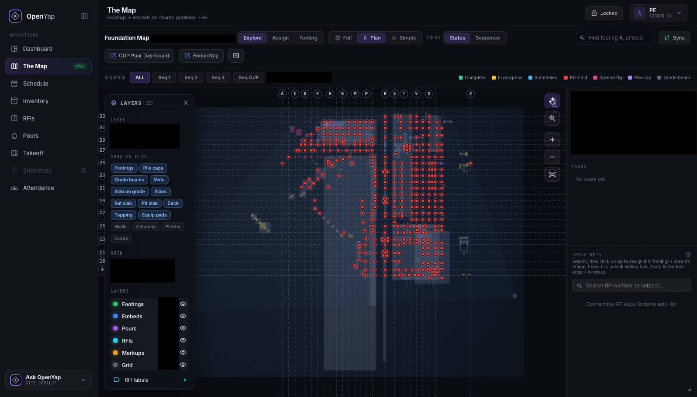

Command Center — the whole jobsite on one screen.
The operating picture for a concrete team on a $2B convention center expansion. Schedule, pours, embeds, RFIs, submittals, inspections, tools and crew — behind one role-aware login, on a map generated from the structural model rather than traced from a drawing of it. Five field apps became one platform. It is the screen the superintendent runs the 6 AM tailgate from.
The suite working was the problem. Each app answered its own question well, but the superintendent’s real question crossed four of them at once — what is ready for inspection, what is holding up tomorrow’s pour, who is on site today. Answering it meant four logins, four maps and four versions of the truth. And the plan underneath all of them had been traced by hand off a PDF: shapes with no dimensions, no volumes, and no way to prove any of it matched the structure actually being built.
One platform, one sign-in, one record. The map is generated from the project’s own structural model, so every shape on it is a real member carrying its real dimensions instead of an outline somebody drew over a drawing. Progress is tracked against those members, stage by stage, which means the map, the dashboard and the printed report cannot disagree — they are all reading the same thing. Access is role-based and enforced on the server rather than hidden in the interface, so view-only is what a phone in the field gets by default.
- The map — members, embeds, pours, zones and markups as toggleable layers, in 2D or 3D.
- RFIs & submittals — the project registers, searchable, tied to the area they affect.
- Inspections — Ready → Pass/Fail sign-off that records who signed and when.
- The paperwork — a plotted status drawing, a weekly report, a quantity register.

Client and project data redacted.
A tool people are told to use gets opened once. So the sign-in is a terminal that greets you by time of day, and the mark above it is a merlion, drawn once as geometry and reused everywhere the app needs a logo. It took five rejections to find the rule underneath it: repetition plus regularity reads as decoration, not as an animal. A flower, a sun and a star are the same construction, so restyling the petal was never going to fix it. Every change that stuck was structural, and three of them were deleting a feature rather than redrawing it.
Ten views behind one login, and six separate apps retired into one. The number that matters is not on the screen. It is that the argument about what actually got built — the one that used to happen in the field on pour morning, at the worst possible moment — now happens weeks earlier, on a screen, with everyone looking at the same picture.
It covers the foundation scope, not the whole structure. It is an internal tool behind a company sign-in, so there is no public demo — the screenshots here are the tour, and the project data on them is redacted. And moving the last of the older apps onto the platform is still in progress.